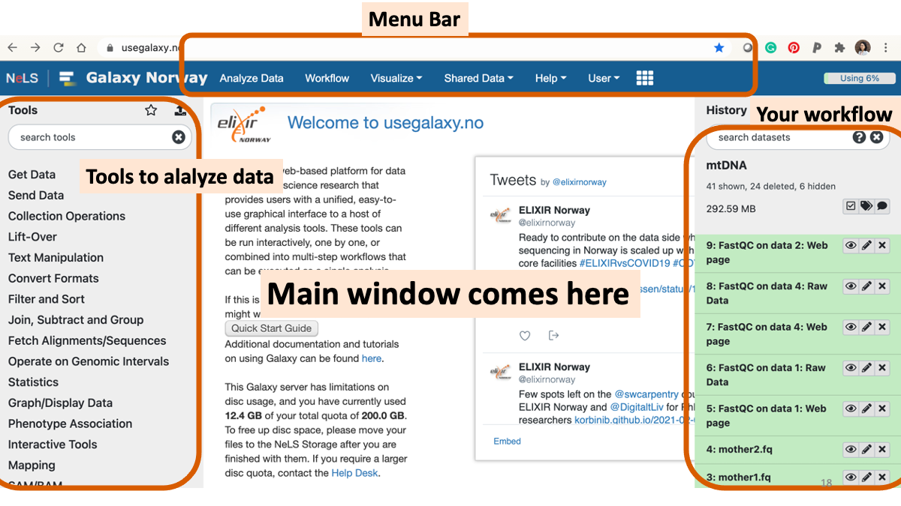
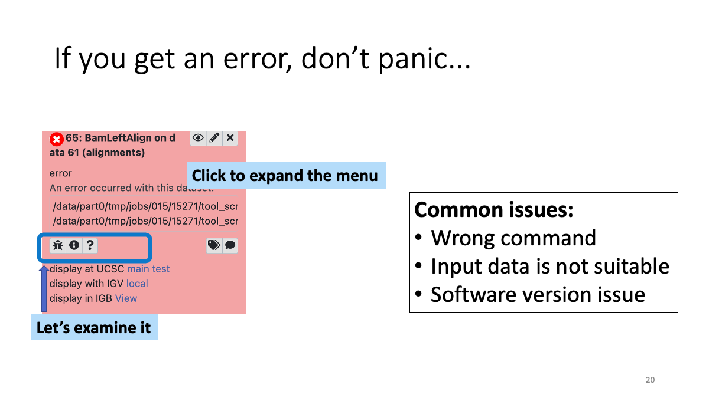
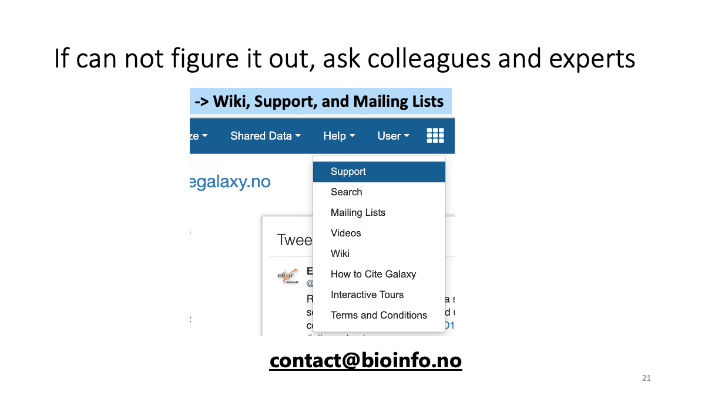
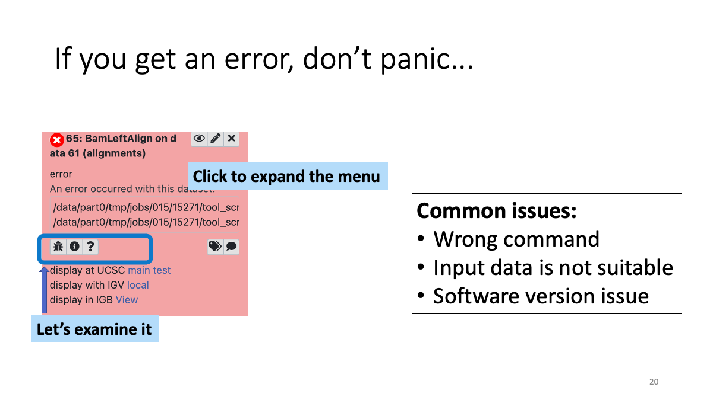
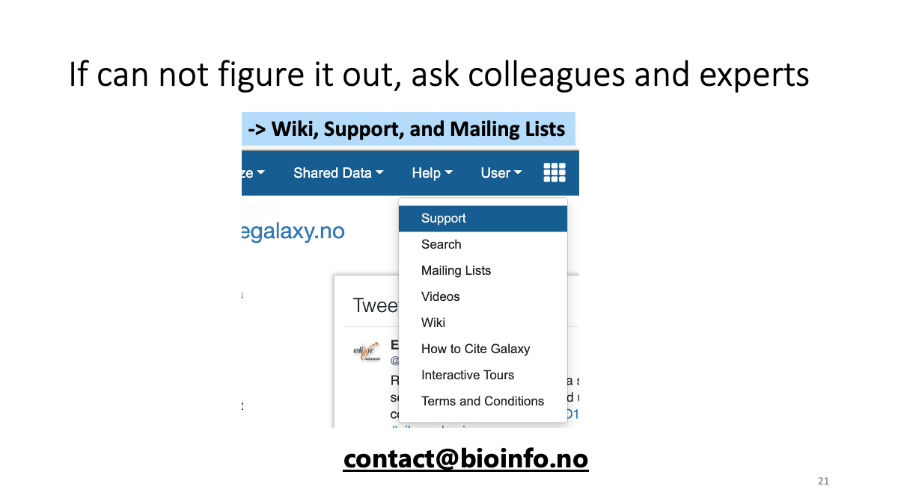
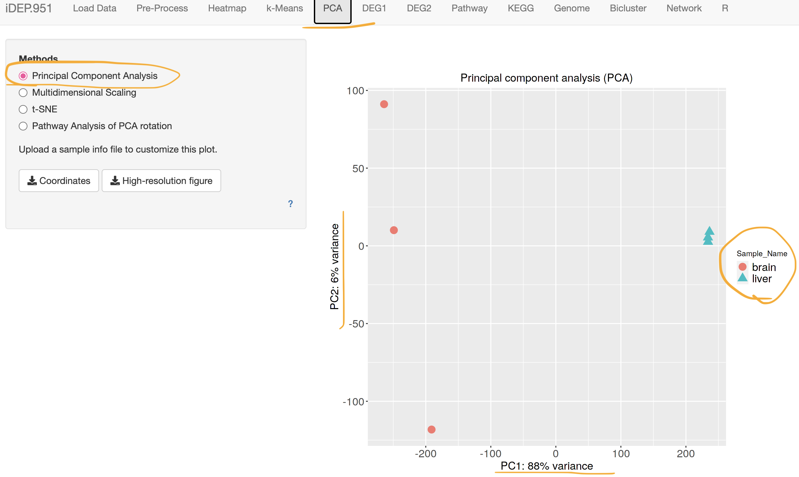
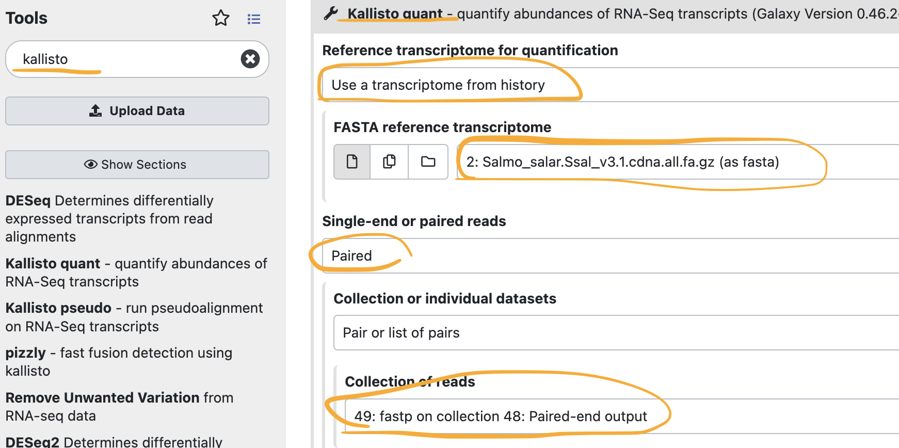

RNAseq tutorial for lab people
Marie Saitou
4/21/2022
Last updated: 2022-05-26
Checks: 7 0
Knit directory: Bio326/
This reproducible R Markdown analysis was created with workflowr (version 1.7.0). The Checks tab describes the reproducibility checks that were applied when the results were created. The Past versions tab lists the development history.
Great! Since the R Markdown file has been committed to the Git repository, you know the exact version of the code that produced these results.
Great job! The global environment was empty. Objects defined in the global environment can affect the analysis in your R Markdown file in unknown ways. For reproduciblity it’s best to always run the code in an empty environment.
The command set.seed(20210128) was run prior to running the code in the R Markdown file. Setting a seed ensures that any results that rely on randomness, e.g. subsampling or permutations, are reproducible.
Great job! Recording the operating system, R version, and package versions is critical for reproducibility.
Nice! There were no cached chunks for this analysis, so you can be confident that you successfully produced the results during this run.
Great job! Using relative paths to the files within your workflowr project makes it easier to run your code on other machines.
Great! You are using Git for version control. Tracking code development and connecting the code version to the results is critical for reproducibility.
The results in this page were generated with repository version e5d285b. See the Past versions tab to see a history of the changes made to the R Markdown and HTML files.
Note that you need to be careful to ensure that all relevant files for the analysis have been committed to Git prior to generating the results (you can use wflow_publish or wflow_git_commit). workflowr only checks the R Markdown file, but you know if there are other scripts or data files that it depends on. Below is the status of the Git repository when the results were generated:
Ignored files:
Ignored: .DS_Store
Ignored: .RData
Ignored: .Rhistory
Ignored: analysis/.DS_Store
Ignored: analysis/popgen.simu.nb.html
Untracked files:
Untracked: BIO326 URL genome annotatin computer lab_24_MAR_2021.docx
Untracked: BIO326-121VGenomesequencingBIO326-121VGenomsekvensering;verktøyoganalyser-BIO326-121VGenomesequencing_PhillipByronPope.pdf
Untracked: BIO326-RNAseq.pptx
Untracked: BIO326-genome/
Untracked: BIO326.MS.10th_FEB_2021function.pptx
Untracked: BIO326_Introduction to sequence technology and protocols_3rd_FEB_2021.pdf
Untracked: BIO326_Introduction to sequence technology and protocols_3rd_FEB_2021.pptx
Untracked: BIO326_RNAseq_5th_FEB_2021.pptx
Untracked: BIO326_SQK-RAD004 DNA challenge.docx
Untracked: BIO326_visual_30_APR_2021.pptx
Untracked: Bio326.2022.1.Rmd
Untracked: Bio326.genome.html
Untracked: Nanopore_SumStatQC_Tutorial.Rmd
Untracked: PCRdemo.R
Untracked: Pig_mutation_hist.csv
Untracked: PopGenBio326.322/
Untracked: RNAseq.Rplot.pdf
Untracked: Untitled.R
Untracked: [eng]BIO326-121VGenomesequencingBIO326-121VGenomsekvensering;verktøyoganalyser-BIO326-121VGenomesequencing_PhillipByronPope.mht
Untracked: [eng]BIO326-121VGenomesequencingBIO326-121VGenomsekvensering;verktøyoganalyser-BIO326-121VGenomesequencing_PhillipByronPope.pdf
Untracked: analysis/AnimalGenomics.Rmd
Untracked: analysis/AnimalGenomicsVariant2022.Rmd
Untracked: prepare.txt
Untracked: samples.xlsx
Untracked: test/
Untracked: trial/
Untracked: vis.xlsx
Untracked: workflowR.bio326.R
Note that any generated files, e.g. HTML, png, CSS, etc., are not included in this status report because it is ok for generated content to have uncommitted changes.
These are the previous versions of the repository in which changes were made to the R Markdown (analysis/RNAseq_for_lab.Rmd) and HTML (docs/RNAseq_for_lab.html) files. If you’ve configured a remote Git repository (see ?wflow_git_remote), click on the hyperlinks in the table below to view the files as they were in that past version.
| File | Version | Author | Date | Message |
|---|---|---|---|---|
| Rmd | e5d285b | mariesaitou | 2022-05-26 | wflow_publish(c(“analysis/RNAseq_for_lab.Rmd”)) |
| html | 2084e7f | mariesaitou | 2022-05-26 | Build site. |
| Rmd | e4f0b6b | mariesaitou | 2022-05-26 | wflow_publish(c(“analysis/RNAseq_for_lab.Rmd”)) |
Lecture slides (currently dummy)
Marie: Overview of the RNAseq. What can RNAseq tell us/What should we do when we write a manuscript. slides Matthew: RNAseq lab part mechanism, experimental design etc.slides Domniki: How to upload data to ENA. slides
0. Goal of this workflow
Objective: Conduct comparative RNA sequencing analyis between fish brain and liver datasets
We will learn: A. How to conduct “cleaning” of the RNAseq data. B. How to quantify the gene expression in each sample. C. How to conduct downstream analysis to gain biological insights.
1. Galaxy introduction
Useful materials: https://training.galaxyproject.org/training-material/topics/introduction/
1-1. Register and login to Galaxy
Go to https://usegalaxy.no/ , Galaxy is a web platform with various software for genome analyses. You should be able to log in with “Feide” information at galaxy.no (NMBU ID and password) If you are not NMBU employee, you can use these for free: https://usegalaxy.eu/ or https://usegalaxy.org/
1-2. Play around with Galaxy
   
 
1-3. Review the RNAseq analysis workflow
On Galaxy - Get RNAseq data (paired end, liver and brain, three samples each) - Get reference transcriptome: Salmo salar version 3.1 - fastp: trimming low-quality reads - Kallisto: quantify gene expression from the RNAseq data and reference - tximport: summarize transcripts into genes
On iDEP - Upload gene expression table - Quality check - Plot genes of interest - Differentially expressed gene - Gene ontology analysis
2. Get the data
There are three major public repository for genomics data ENA (Europe), NCBI (America) DDBJ (Japan) – which are regularly synchronized.
This time, we will analyze brain and liver transcriptome datasets from the following study: “Multi-tissue transcriptome profiling of North American derived Atlantic salmon” Paper: https://www.ncbi.nlm.nih.gov/pmc/articles/PMC6146974/ Dataset: https://www.ebi.ac.uk/ena/browser/view/PRJNA470665
3. Quality Control
2-0. Introduction
https://www.ensembl.org/Salmo_salar/Info/Index
http://ftp.ensembl.org/pub/release-106/fasta/salmo_salar/cdna/Salmo_salar.Ssal_v3.1.cdna.all.fa.gz
Get the reference
Get the RNAseq data At it takes hours to analyze the real (gigabytes) data, I made a miniature datasets for each samples.
GSM3138423 brain_rep1 GSM3138424 brain_rep2 GSM3138425 brain_rep3 GSM3138435 liver_rep1 GSM3138436 liver_rep2 GSM3138437 liver_rep3
# Real brain samples (two files per sample)
# Real liver samoles (two files per sample)
If you want to try with real data, click here
# Real brain samples (two files per sample)
ftp://ftp.sra.ebi.ac.uk/vol1/fastq/SRR713/005/SRR7139945/SRR7139945_1.fastq.gz
ftp://ftp.sra.ebi.ac.uk/vol1/fastq/SRR713/005/SRR7139945/SRR7139945_2.fastq.gz
ftp://ftp.sra.ebi.ac.uk/vol1/fastq/SRR713/007/SRR7139947/SRR7139947_1.fastq.gz
ftp://ftp.sra.ebi.ac.uk/vol1/fastq/SRR713/007/SRR7139947/SRR7139947_2.fastq.gz
ftp://ftp.sra.ebi.ac.uk/vol1/fastq/SRR713/000/SRR7139950/SRR7139950_1.fastq.gz
ftp://ftp.sra.ebi.ac.uk/vol1/fastq/SRR713/000/SRR7139950/SRR7139950_2.fastq.gz
# Real liver samoles (two files per sample)
ftp://ftp.sra.ebi.ac.uk/vol1/fastq/SRR713/009/SRR7139969/SRR7139969_1.fastq.gz
ftp://ftp.sra.ebi.ac.uk/vol1/fastq/SRR713/009/SRR7139969/SRR7139969_2.fastq.gz
ftp://ftp.sra.ebi.ac.uk/vol1/fastq/SRR713/001/SRR7139971/SRR7139971_1.fastq.gz
ftp://ftp.sra.ebi.ac.uk/vol1/fastq/SRR713/001/SRR7139971/SRR7139971_2.fastq.gz
ftp://ftp.sra.ebi.ac.uk/vol1/fastq/SRR713/003/SRR7139973/SRR7139973_1.fastq.gz
ftp://ftp.sra.ebi.ac.uk/vol1/fastq/SRR713/003/SRR7139973/SRR7139973_2.fastq.gz
Marie’s note to make tutorial files
for file in *.fastq.gz; do zcat < $file | head -100000 | gzip > {$file}_mini.fastq.gz; doneGalaxy
https://www.ncbi.nlm.nih.gov/geo/query/acc.cgi?acc=GSE114247
Quality check
Trimming of bad quality data and adaptors Fastp
Kallisto
What fastp does (from Galaxy page)
fastp is a tool designed to provide fast all-in-one preprocessing for FASTQ files.
Features
- Filter out bad reads (too low quality, too short, or too many N...)
- Cut low quality bases for per read in its 5' and 3' by evaluating the mean quality from a sliding window (like Trimmomatic but faster)
Trim all reads in front and tail
- Cut adapters. Adapter sequences can be automatically detected, which means you don't have to input the adapter sequences to trim them.
- Correct mismatched base pairs in overlapped regions of paired end reads, if one base is with high quality while the other is with ultra-low quality
- Trim polyG in 3' ends, which is commonly seen in NovaSeq/NextSeq data. Trim polyX in 3' ends to remove unwanted polyX tailing (i.e. polyA tailing for mRNA-Seq data)
- Preprocess unique molecular identifer (UMI) enabled data, shift UMI to sequence name
- Report JSON format result for further interpreting
- Visualize quality control and filtering results on a single HTML page (like FASTQC but faster and more informative)
- Split the output to multiple files (0001.R1.gz, 0002.R1.gz...) to support parallel processing. Two modes can be used, limiting the total split file number, or limitting the lines of each split file (Not enabled in this Galaxy tool)
- Support long reads (data from PacBio / Nanopore devices)
What Kallisto does (from Galaxy page)
kallisto is a program for quantifying abundances of transcripts from RNA-Seq data, or more generally of target sequences using high-throughput sequencing reads. It is based on the novel idea of pseudoalignment for rapidly determining the compatibility of reads with targets, without the need for alignment. On benchmarks with standard RNA-Seq data, kallisto can quantify 30 million human reads in less than 3 minutes on a Mac desktop computer using only the read sequences and a transcriptome index that itself takes less than 10 minutes to build. Pseudoalignment of reads preserves the key information needed for quantification, and kallisto is therefore not only fast, but also as accurate as existing quantification tools. In fact, because the pseudoalignment procedure is robust to errors in the reads, in many benchmarks kallisto significantly outperforms existing tools.


If it is taking too long, here is the output file. sample * gene expression table.
IDEP
sessionInfo()R version 4.1.2 (2021-11-01)
Platform: x86_64-apple-darwin17.0 (64-bit)
Running under: macOS Big Sur 10.16
Matrix products: default
BLAS: /Library/Frameworks/R.framework/Versions/4.1/Resources/lib/libRblas.0.dylib
LAPACK: /Library/Frameworks/R.framework/Versions/4.1/Resources/lib/libRlapack.dylib
locale:
[1] en_US.UTF-8/en_US.UTF-8/en_US.UTF-8/C/en_US.UTF-8/en_US.UTF-8
attached base packages:
[1] stats graphics grDevices utils datasets methods base
other attached packages:
[1] workflowr_1.7.0
loaded via a namespace (and not attached):
[1] Rcpp_1.0.8.2 bslib_0.3.1 compiler_4.1.2 pillar_1.7.0
[5] later_1.3.0 git2r_0.29.0 jquerylib_0.1.4 tools_4.1.2
[9] getPass_0.2-2 digest_0.6.29 jsonlite_1.8.0 evaluate_0.15
[13] tibble_3.1.6 lifecycle_1.0.1 pkgconfig_2.0.3 rlang_1.0.2
[17] cli_3.2.0 rstudioapi_0.13 yaml_2.3.5 xfun_0.30
[21] fastmap_1.1.0 httr_1.4.2 stringr_1.4.0 knitr_1.37
[25] sass_0.4.0 fs_1.5.2 vctrs_0.3.8 rprojroot_2.0.2
[29] glue_1.6.2 R6_2.5.1 processx_3.5.2 fansi_1.0.2
[33] rmarkdown_2.13 callr_3.7.0 magrittr_2.0.2 whisker_0.4
[37] ps_1.6.0 promises_1.2.0.1 htmltools_0.5.2 ellipsis_0.3.2
[41] httpuv_1.6.5 utf8_1.2.2 stringi_1.7.6 crayon_1.5.0